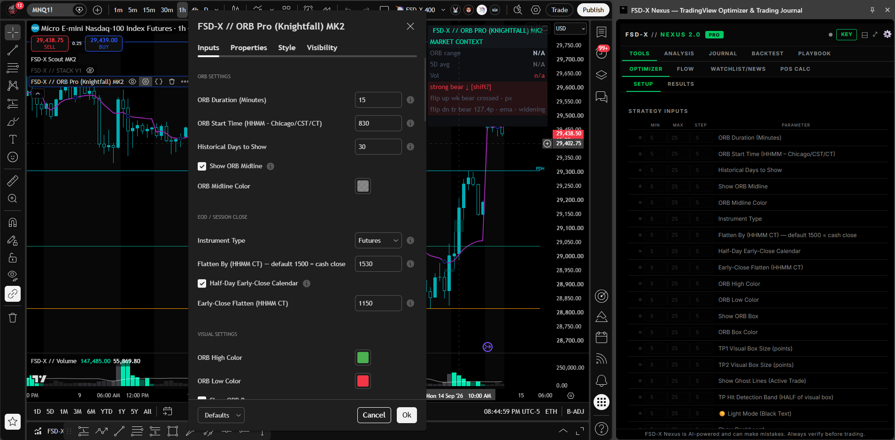

The tools that run the system
Here's every tool you get — what each one does and how it helps you trade the open. All of them come with the membership, and so does everything further down this page: the member platform on this site, the live trade room, Scout alerts, the monthly one-on-one and the training library. One price, twelve components, no tiers.
FSD-X ORB PRO (Knightfall MK2)
What it does
The core tool. It watches the Nasdaq (NQ / MNQ) at the open on the 5-minute chart and tells you when a breakout is worth taking — with the entry, stop, and target already worked out. Instead of staring at the chart guessing, you get a graded setup to trade.
Every setup is scored before you enter, on four inputs: the higher-timeframe trend state, how this morning's opening range compares to its own recent average, volume against its recent average, and current volatility. The total sets the grade, A+ down to F. Weak mornings grade low so you can leave them alone.
The target isn't a fixed number of points. The script looks for a real level ahead of price to aim at — previous day high/low, weekly high/low, recent swing levels, and fair value gaps.
Some mornings there's no clean level sitting inside the minimum R:R. When that happens the target falls back to a multiple of the opening range itself — 0.5x, 1x or 2x — so you still get a defined target instead of an open trade.
A dashboard sits on the chart showing how the system has done over the period you're looking at — dollar results broken out by grade, profit factor, best and worst streaks, and the deepest drawdown.
Knightfall can now manage the stop after you're in the trade. It has always set the stop once at entry and left it there, and that is still the default — this adds the option to have the stop move in your favour as the trade develops: to breakeven, trailing behind price, or breakeven first and then trailing. Same script, nothing extra to install.
Off, Breakeven Only, Trail Only, or Breakeven then Trail. It ships Off, so existing charts behave exactly as they did before the update.
A fixed number of points, or a percentage of that trade's own first target — so the trigger stays in proportion to the setup in front of you instead of being the same number every morning.
Breakeven doesn't have to mean exactly your fill. Place it slightly into profit so the trade is locked green, or slightly below it as a partial reduction in risk rather than a full move to breakeven.
Runs alongside every Partials Mode — full exit at TP1, partial and runner splits, or full size to TP2. Your targets and contract split are never changed. Only the stop moves, and only ever in your favour.
It's a trade-off, not a free upgrade. A tight trail exits closer to the high of a move but gets stopped out by normal pullbacks; a wide trail survives pullbacks but gives back more when it does exit. Different settings produce genuinely different behaviour — test them in replay before you trade them.
A Quality-Only toggle shows just the A+, A and B+ history. If the lower grades are running negative over the period you're looking at, you can see it at a glance and tighten which grades you're willing to take.

Knightfall MK2 puts the live signals, the grading, and the full backtest in one script — so what you see on the chart and what you see in the backtest always match. This one isn't sold on its own. It comes with the membership, along with the live trading room, the companion tools, and the VIP Discord channels.
FSD-X // Stack V1
What it does
A second opinion before you enter. It checks whether the smaller and bigger timeframes agree on direction, so you can skip the breakouts that are fighting the trend. Use it alongside ORB PRO, or on its own.
Reads the EMA trend on seven timeframes at once — 1m, 5m, 15m, 30m, 1h, 4h and Daily. When 60% or more point the same way it calls a BULL STACK or BEAR STACK, so you can see whether the whole board agrees before you pick a side.
Plots the POC — the price where the most volume traded over the lookback you set. It's the level the session actually fought over, so it tells you whether price is working above it or stuck underneath it.
Plots the standard pivots (PP, R1, R2, S1, S2) off the prior day, week or month. Simple, widely watched levels — useful precisely because plenty of other traders are looking at the same ones.
The strongest entries line up: price clears the opening range level, holds above the session POC and the pivot, and the stack reads 6/7 or 7/7 in the same direction. When the timeframes are mixed, size down or sit the morning out.

Fast and slow EMA lengths (20/50 is the recommended pair), an adjustable band that decides when a timeframe counts as flat rather than trending, and switches for which levels show on the chart.
FSD-X // Volume Indicator
What it does
Shows whether real volume is behind the breakout. It marks the exact breakout candle in your volume pane and colors it green or red, so you can see at a glance if the move has strength — no guessing whether it's the real thing.
System Color Key Architecture
Shows whether the breakout candle traded on heavier volume than the session average, or whether the move happened on almost nothing.
Track whether volume keeps up as price runs toward the target, or dries up partway there — the usual tell before a move stalls out.
Marks where the outsized volume bars printed through the regular session, so you can see which candles actually did the work in the move.

Runs in the lower pane under your price chart and lines up with the ORB window the main indicator draws, so the volume bars and the breakout candle read together.
FSD-X // ORB Raven
Every breakout marked, with all the levels drawn — and no opinion about which to take.
Also sold on its own as the Raven tier at $39.99/month. Included here at no extra cost. Compare →
What it does
The same opening range detection, stop placement and target selection as Knightfall — with the selection layer removed. Raven marks every breakout of the range, both directions, and draws the entry, the stop, both targets, the midpoint and a nearby watch level for each one. It does not grade them and it does not filter them.
There is no A+ through F score and no "don't take this one". Every breakout is drawn and the read stays with the trader. For a member who already has their own criteria, a system that overrules them is worse than one that doesn't.
Every target carries the kind of level it came from — prior day or week high and low, chart and higher-timeframe S/R, unfilled fair value gaps, round numbers. You always know what you are aiming at, not just a price.
Contracts from your risk setting and the distance to the stop — plus the real dollar risk, because rounding to a whole contract means the two rarely match. It flags the case where one contract already exceeds your risk.
A second breakout on the same side leaves the previous level set faded on the chart, so a position you still have open stays readable instead of being redrawn away.
No backtest tab, no equity curve, no trade tracking and no automated execution. Raven never finds out what happened after the breakout, so it has no win rate to report. The backtest and live record on this site belong to ORB PRO (Knightfall).

Members who bring their own read and want the levels drawn properly — where the opening range sits, where the stop belongs, where a realistic target is. If you want the system to decide the morning for you, that is Knightfall, above.
What it does
The all-in-one Chrome extension built specifically for prop firm futures traders. Nexus runs as a side panel directly inside TradingView — no tab switching, no extra windows. Everything you need to trade, journal, and analyze is in one place next to your chart.
// Included with the FSD-X membership. Also available on its own in Nightwing, the $9.99 tools tier — platform + Nexus, no indicator suite.
Only the membership's own trial is limited. On the $129 membership Nexus is one part of a much bigger bundle, so its 30-day trial runs on the middle column. Everywhere else the extension is most of what you're paying for, so a trial there would leave you nothing to judge — Nightwing (7-day trial), Raven (7-day trial) and standalone Nexus (3-day trial) all run on full access from day one, trial or not. Longer billing terms have no trial and start on full access immediately.
Full trade logging with calendar view, P&L tracking, win rate stats, grade filtering, tag system, CSV import/export, and multi-account support.
Automates Pine Script backtesting on TradingView. Scans strategy inputs, sets min/max/step ranges, runs all combinations hands-free, and exports ranked results to CSV.
Upload up to 3 chart timeframes and get an AI breakdown of structure, bias, key levels, and setup quality. Includes an optional risk calculator.
AI-powered news sentiment scan with Bullish/Bearish/Neutral verdict. Live economic calendar with High/Med/Low impact filters and timezone support.
Futures and Forex calculator with auto-detected $ per point for NQ, MNQ, ES, MES and major FX pairs. Enter your risk and stop — instantly outputs contracts and R:R.
Monte Carlo prop firm pass rate simulator. Supports Apex, TopStep, MFF, E8, or custom rules. Strategy Analyzer breaks down your edge by day, direction, and grade.
Paste raw options flow data and get an instant AI read on institutional positioning — direction bias, block size analysis, and price implications.
Dedicated journaling for manual backtesting sessions — separate from your live journal. Log by session, track P&L on a calendar, and export to CSV.

It sits beside the chart, not in another tab. The Optimizer reads the strategy's own inputs and sweeps them across the ranges you set — here, Knightfall MK2's settings dialog open on the left and every one of its parameters listed on the right.

Install from the Chrome Web Store and unlock it with your member key. It runs on its own — only the Strategy Optimizer needs TradingView open.
It is not a position size calculator with extras
Nexus is five tools in a side panel that sits against the TradingView chart. Most of it has nothing to do with our indicators — it works on whatever you happen to be trading.

The panel docks to the right of the TradingView chart and stays there while you work. Above, the Optimizer part-way through a sweep — it reports the combination it is on, how far through it is and how long is left, and can be stopped at any point.
Open any TradingView strategy's settings dialog and Nexus reads its inputs straight off the screen. Give each one a minimum, a maximum and a step, run the sweep, and read the combinations back ranked. It is not limited to our scripts — it optimises whatever strategy is on your chart.
Presets for Apex, TopStep, MFF and E8, or set your own account size, daily drawdown, trailing or end-of-day drawdown and profit target. Feed it your journal and it simulates the evaluation, including how the result changes with contract count.
Simulated outcomes from your own past trades. Hypothetical, and not a prediction that any evaluation will pass.
Drop in your entry, confirmation and trend charts and get them read as one picture, with your ticker, strategy and maximum risk as context. It is AI-assisted and it says so in the panel — a second opinion to argue with, not an instruction.
Position calculator for futures and forex, micro or standard, sized off your stop to a target R:R. Plus a watchlist scanner, news headlines, an economic calendar and an options flow reader.
Log a trade without leaving the chart — entry, exit, stop, both targets, tags, notes and a screenshot. Then history and stats: win rate, net P&L, long versus short, performance by day, drawdown from peak. Export to CSV or PDF.
Upload a CSV, keep each run as its own session, and read the results back the same way you read your live record. Sessions sync with the backtest workspace on this site.
Your rules, setups and goals, plus a pre-trade checklist you tick off before entering. Daily rules and drawdown-protection rules live here too, and all of it syncs with the playbook on this site.
The panel and the site are one account, not two
This is the difference between Nexus and every other browser extension you have tried. It is not a standalone tool that happens to share a login — it reads and writes the same data as the platform on this site, both directions, automatically.
Log a trade in the panel while the chart is still in front of you, and it is in your journal on this site before you have closed the tab.
Upload a backtest CSV on the site and the session is there in the panel's Backtest tab, ready to read against the chart.
Your playbook is one list. Rules, setups, goals and the pre-session checklist — tick something off in the panel and the site knows.
Accounts and defaults follow you. Tracked accounts, your usual ticker, timeframe and contract count are set once and apply in both places.
Which is why buying one without the other would not make sense — and why they are never sold apart.
The membership is not just the scripts.
The indicators above are one part of it. The same membership also includes a full trader platform built into this site, the automated alert stream, the live room every market morning, a monthly one-on-one call, and the training library. Nothing here is an add-on and nothing here is priced separately.
The FSD-X Member Platform
A trader workspace built into this site. Dashboard with live P&L, win rate and equity curve. A trade journal on a calendar. A broker importer that reads Tradovate order exports and TradingView strategy exports, catches duplicates across overlapping files and applies your real commissions. A backtest workspace that turns any imported CSV into stats, an equity curve and a calendar. A multi-account prop-firm tracker with trailing and end-of-day drawdown rules. And the written playbook.
See the platform →This is the actual workspace, not a mockup. Pick a tool to see it.


Real screenshots of the live workspace. Figures shown in them are illustrative and are not a representation that any account will perform similarly.
The Live Trade Room
Live every market morning at 8:30 AM CT for the Nasdaq opening range breakout, plus a weekly Monday gameplan session. Watch the setups grade in real time and hear the reasoning behind each one. Educational only — trades shown are hypothetical and should not be expected to be replicated in a live account.
See the schedule →FSD-X Scout
The automated alert stream. Graded setups post to your member alert feed and to the VIP Discord channels as they form, so a setup doesn't need you watching the chart at 8:30 to reach you.
Monthly 1-on-1 Call
A 30-minute one-on-one call each month — go through your own journal, your grading, and the mornings that are costing you. Educational only; not personalised investment advice.
Setup & Training Library
Video walkthroughs for installing, calibrating and running the suite, the Auto Trader setup guide, the default-settings reference table, and the ORB playbook cheat sheet.
Open the knowledge base →Everything on this page. One membership.
The indicators, the Auto Trader, the member platform, Scout alerts, the live trade room, the monthly one-on-one and the training library are included on every plan — Monthly, Quarterly or Annual. There are no tiers and no upsells inside the membership.
View Membership Plans →You've seen the tools. Now run them live.
Every tool on this page is included in one membership — plus the daily live trade room. Start with the 30-day free trial.
$129/mo after trial · Cancel anytime in one click via Whop
Trading futures involves substantial risk of loss and is not suitable for every investor. Past performance is not necessarily indicative of future results.
Not ready to join? The Discord is free.
Market talk, our free indicator, and traders working on the same thing. Look around before you decide.